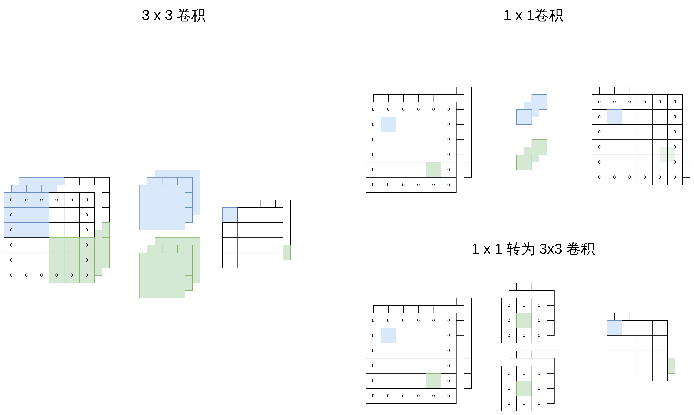
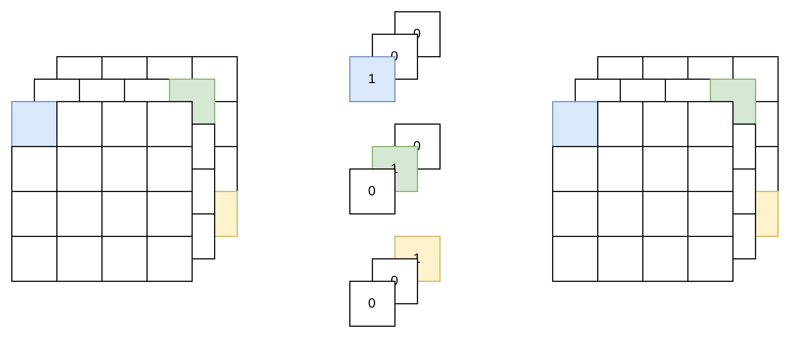
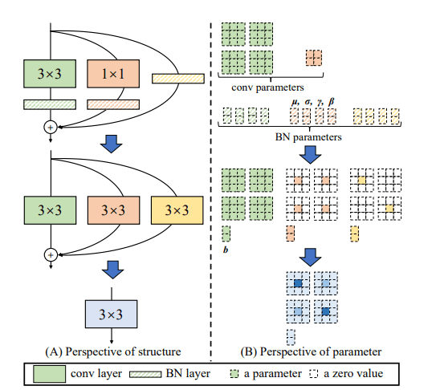

在VGG的基础上，结合了ResNet，在VGG的 Block 中加入了1×1 卷积分支和残差分支。并在训练时，通过重参数融合了3×3 卷积、1×1 卷积与 残差连接到一个单独的 3×3 卷积中，大大减少了模型宽度，以节约显存。
将 3 x 3卷积与BatchNorm结合为单个 3 x 3 卷积
卷积层，卷积参数为 W，卷积操作为 W(⋅)
Conv(x)=W(x)+b
BatchNorm
BN(x)=γvarx−mean+β
卷积+BatchNorm
BN(Conv(x))=γvarW(x)+b−mean+β
BN(Conv(x))=varγ×W(x)+(varγ(b−mean)+β)
也可以将其视为一个卷积：
新的参数为 varγW
新的偏置为 varγ(b−mean)+β
将原先的权重 W 与偏置 β 重参数到混合后的 Wfused、Bfused
Wfused=varγW
Bfused=varγ(b−mean)+β
1 x 1转为 3 x 3 卷积

残差连接转为 3 x 3 卷积
残差连接分支的输出等于输入，因此，可以看作是一个特殊的输入通道=输出通道的 1x1 卷积

然后可以再次转为 3x3 卷积。
整合
分别将3 x 3 与Batchnorm、1x1、残差连接转为3x3卷积后，再整合为一个 3 x 3 卷积：

Arxiv
Github